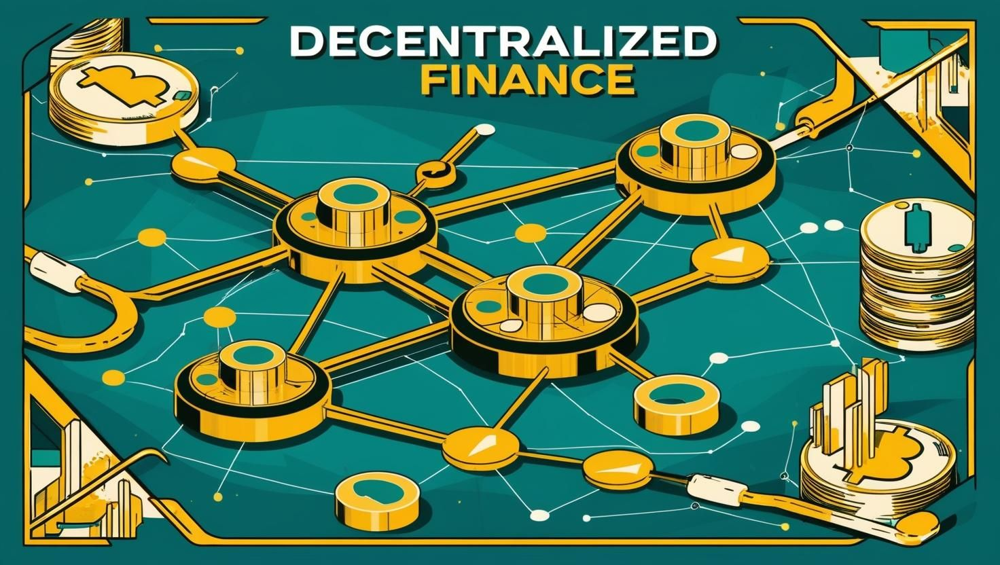

Understanding DeFi: The Future of Finance
Decentralized Finance, commonly known as DeFi, represents a revolutionary shift in how we think about financial systems. Built on blockchain technology, DeFi recreates traditional financial services—such as lending, borrowing, trading, insurance, and asset management—without the need for centralized intermediaries like banks, brokers, or clearinghouses. Instead, it relies on smart contracts, which are self-executing agreements coded onto blockchains, to automate processes, ensure security, and maintain transparency.
The ethos of DeFi is rooted in openness and accessibility. Anyone with an internet connection and a compatible wallet can participate, regardless of location, credit history, or institutional approval. This permissionless nature challenges the gatekeeping of traditional finance, offering a glimpse into a world where financial empowerment is decentralized and global.
Since its emergence around 2018, largely catalyzed by Ethereum’s smart contract capabilities, DeFi has exploded in popularity. Billions of dollars in value are now locked in DeFi protocols, spanning lending platforms, decentralized exchanges (DEXs), yield farming opportunities, and more. But what makes DeFi tick, and which platforms are driving its massive transaction volumes? Let’s dive in.
How DeFi Works
At the heart of DeFi is the blockchain—typically a public, decentralized ledger like Ethereum, Solana, or Binance Smart Chain. Here’s a breakdown of its key components:
- Smart Contracts: These are the backbone of DeFi, automating transactions and enforcing rules without human intervention. For example, a lending protocol might use a smart contract to release funds once collateral is deposited.
- Decentralized Applications (dApps): DeFi platforms are often accessed via dApps—user-friendly interfaces that connect to underlying smart contracts. Think of them as the front-end portals to DeFi’s back-end machinery.
- Cryptocurrencies and Tokens: DeFi relies heavily on digital assets, from stablecoins (like USDC or DAI) pegged to fiat currencies, to governance tokens that give users a say in protocol decisions.
- Non-Custodial Wallets: Unlike traditional banks, DeFi lets users retain full control of their funds through wallets like MetaMask or Trust Wallet, reducing reliance on third-party custodians.
Core Features of DeFi
- Permissionless Access: No KYC (Know Your Customer) requirements or institutional gatekeepers—just connect a wallet and start using it.
- Transparency: All transactions are recorded on public blockchains, auditable by anyone in real time.
- Interoperability: DeFi protocols often integrate with one another, creating a “money Lego” ecosystem where components stack together seamlessly.
- Global Reach: DeFi operates 24/7 worldwide, unrestricted by geographic borders or banking hours.
- Programmability: Developers can build custom financial tools, fostering innovation at a pace traditional finance can’t match.
The Appeal of DeFi
DeFi’s rise isn’t just about tech—it’s about solving real-world problems. Traditional finance can be slow, expensive, and exclusionary, with high fees, long settlement times, and limited access for the unbanked. DeFi counters this by offering low-cost transactions, instant settlements, and inclusivity. Whether it’s earning yield on idle crypto, swapping tokens without a middleman, or borrowing against digital assets, DeFi provides alternatives that resonate with a growing crypto-savvy audience.
However, it’s not without risks—smart contract bugs, market volatility, and regulatory uncertainty loom large. Still, the potential to reshape finance keeps DeFi in the spotlight.
Major Platforms Driving DeFi Volume
DeFi’s explosive growth is fueled by a handful of platforms that dominate transaction volume and liquidity. While hundreds of protocols exist, here are the heavyweights moving the needle, along with the blockchains powering them:
1. Uniswap (Ethereum)
- What It Does: Uniswap is a decentralized exchange (DEX) that uses an automated market maker (AMM) model, allowing users to swap tokens directly from their wallets without order books or intermediaries.
- Why It’s Big: Its simplicity, deep liquidity pools, and pioneering role in AMMs make it a DeFi cornerstone. Uniswap often leads Ethereum’s DEX volume, with billions swapped monthly.
- Key Feature: Liquidity providers earn fees by depositing tokens into pools, incentivizing participation.
2. Aave (Ethereum, Multi-Chain)
- What It Does: Aave is a lending and borrowing platform where users can deposit crypto to earn interest or borrow against collateral.
- Why It’s Big: With features like flash loans (uncollateralized loans repaid in one transaction), Aave attracts developers and traders alike. Its multi-chain expansion boosts its reach.
- Key Feature: Variable and stable interest rates cater to diverse user needs.
3. Curve Finance (Ethereum, Multi-Chain)
- What It Does: Curve specializes in stablecoin trading, offering low-slippage swaps between assets like USDT, USDC, and DAI.
- Why It’s Big: Its efficiency in stablecoin markets draws large-volume traders and yield farmers, locking up significant liquidity.
- Key Feature: Optimized for minimal price impact, making it ideal for big trades.
4. PancakeSwap (Binance Smart Chain)
- What It Does: A Uniswap fork on Binance Smart Chain (BSC), PancakeSwap is a DEX for token swaps and yield farming.
- Why It’s Big: BSC’s low fees and fast transactions make PancakeSwap a dominant player outside Ethereum, often rivaling Uniswap in volume.
- Key Feature: Its CAKE token offers staking and governance perks, driving user engagement.
5. Solana-Based Platforms (e.g., Serum, Raydium)
- What It Does: Serum is a DEX with an order-book model, while Raydium is an AMM, both leveraging Solana’s high-speed blockchain.
- Why It’s Big: Solana’s ability to process thousands of transactions per second at near-zero cost has spurred DeFi growth, with Serum and Raydium leading the charge.
- Key Feature: Serum’s interoperability with Ethereum via bridges enhances its appeal.
6. Avalanche-Based Platforms (e.g., Trader Joe)
- What It Does: Trader Joe is a DEX and AMM on Avalanche, offering token swaps and liquidity provision.
- Why It’s Big: Avalanche’s sub-second finality and low fees make it a scalable alternative to Ethereum, with Trader Joe emerging as its DeFi hub.
- Key Feature: One-stop shop for trading, farming, and staking on Avalanche.
The Bigger Picture: Blockchain Competition
While Ethereum remains the DeFi epicenter—hosting Uniswap, Aave, and Curve—it faces stiff competition. Binance Smart Chain’s affordability powers PancakeSwap, Solana’s speed fuels Serum and Raydium, and Avalanche’s flexibility drives Trader Joe. Each blockchain offers trade-offs: Ethereum’s ecosystem is unmatched, but its gas fees can be prohibitive; Solana prioritizes performance, sometimes at the cost of stability; Avalanche balances speed and customization.
These platforms dominate because they solve user pain points—high fees, slow transactions, or limited liquidity—while fostering vibrant communities. Together, they’ve locked up tens of billions in total value locked (TVL), a key metric of DeFi’s health.
The Road Ahead for DeFi
DeFi is still young, with room to grow in adoption, regulation, and technical maturity. As scalability solutions like Ethereum’s sharding, Solana’s Proof of History, and Avalanche’s subnets evolve, expect these platforms to handle even greater volumes. New entrants will emerge, but for now, Uniswap, Aave, Curve, PancakeSwap, Solana’s ecosystem, and Avalanche’s Trader Joe lead the pack.
DeFi isn’t just a trend—it’s a paradigm shift. By decentralizing financial power, it’s rewriting the rules of money. Whether you’re a trader, developer, or curious onlooker, these platforms are where the action is happening.